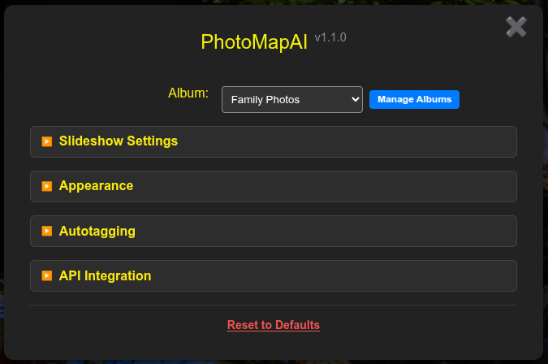
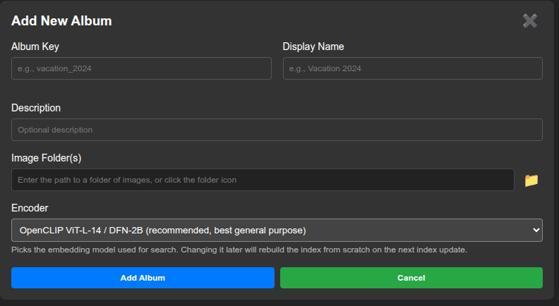

Managing Albums
PhotoMapAI allows you to organize your photos and other images into a series of albums. Each album draws its images from one or more folders of images, and manages independent search indexes and semantic maps. Albums may also overlap by having some image paths in common -- with some restrictions.
Adding Albums
Bring up the Album Manager by clicking on the Settings gear icon and then the green > button.

The Album Management dialogue provides you with controls for creating new albums, editing existing ones, deleting unwanted albums, and bringing an album's contents up to date after you've added or removed image file from its folder paths.
To add an album, press the green button. This will add a new section to the dialogue window that prompts you to enter the following fields:
- Album Key - This is a short mnemonic text that is used to uniquely identify the album. You can add it to PhotoMapAI's URL in order to go directly to the album of your choice, so it is best to avoid spaces and symbols. Once the key is assigned, you can't change it.
- Display Name - This is the name of the album that will be displayed in the settings Album popup menu and the browser tab window title.
- Description (optional) - A description of the album.
- Image Folder(s) - One or more filesystem paths to the folders that contain image files to incorporate into the album.
- Encoder - The vision-language model that will be used to index and search this album. New albums default to OpenCLIP ViT-L-14 / DFN-2B, which is a good general-purpose pick. If your album contains primarily clean single-subject content (such as AI-generated images), or you want the smallest/fastest legacy option, see Encoders for guidance on the alternatives. Pick the encoder before pressing Add Album so the initial indexing uses your choice. Changing the encoder later will automatically rebuild the index from scratch on the next Update Index.

At least one image folder needs to be defined. You can type the path in manually, or browse the filesystem for a folder by clicking on the folder icon to the right of the image folder field. Each time you enter a path, a new empty field will appear, allowing you to add additional folders to the album. You can remove a previously-entered folder by clicking a trash icon that appears next to it.
You are free to organize your image files in any way you wish. You can dump them into a single big folder, or organize them into multiple nested subfolders. During indexing, PhotoMapAI will traverse the folder structure and identify all image files of type JPEG, PNG, TIFF, HEIF, and HEIC.
Indexing Albums
For fast search and retrieval, PhotoMapAI indexes all the image files it finds and stores them in a compact set of indexes. Indexing begins automatically when you first add an album, and will continue in the background even if you navigate away from the Album Manager, or even close the browser.
The time it takes to index depends on how many image files you have, their size, the speed of the disk media, and the availability of a GPU. On a typical Windows machine with an NVidia graphics card, it takes ~2 hours to index 80,000 images located on a network mounted disk. Expect the speed to be noticeably faster on a collection of images located on a local solid-state disk, and much slower (about 10X) on a machine that lacks GPU acceleration.
During indexing, PhotoMapAI will display its progress in three phases. First, it traverses the directory(ies) specified in the album configuration to identify and count image files. During this time PhotoMapAI displays the number of images it has found, but is unable to provide a time or %completion estimate. Second, it runs each image through a machine learning (AI) model to extract high-dimensional semantic information from the image (technically an "embedding"). During this phase, which is usually the longest in duration, PhotoMapAI will display its progress towards completion and an ETA. Lastly, PhotoMapAI generates the cluster map for all the image embeddings it has generated (technically, this is called a "umap"). The umap creation phase typically takes less than a minute and does not benefit from GPU acceleration.
When the indexing process is done, you will find the generated indexes stored in a folder named "photomap_index" located in the first image folder path of the album. Try not to remove or rename this folder. The indexes are relatively small. A folder of 80,000 images that totals 85 GB yields an index that is 300 MB in size.
When you add or remove image files from an album's image directory, you will need to reindex the album. Navigate to the album in the Album Manager list and press the blue button. The update operation will only reindex the files that have been added or removed and will be much faster than the first comprehensive indexing operation.
Skipping Small Images
During the traversal phase, PhotoMapAI inspects each candidate image and skips any whose width or height is below a minimum pixel threshold. The default is 256 pixels in either dimension. This filter is meant to exclude thumbnails, favicons, contact-sheet previews, and other tiny images that don't carry enough visual content for semantic search to work well on them. A summary of how many images were skipped on the last scan is written to the server log.
The threshold is configured per-album as the min_image_dimension field in config.yaml. To change it, locate your config.yaml (see Configuration for the path on your platform) and edit the entry for the album you want to adjust:
albums:
my_album:
name: My Photos
image_paths:
- /path/to/photos
index: /path/to/photos/photomap_index/embeddings.npz
min_image_dimension: 256 # default; raise to be stricter, lower to be more permissive
Some practical values:
256(default) — good for general photo libraries; skips thumbnails but keeps most legitimate photos.128— keeps smaller web images, screenshots, and downscaled phone shots.512or higher — useful if your library mixes generated thumbnails with full-resolution originals and you only want the originals indexed.1— disables the filter entirely; every supported image file is indexed regardless of size.
After saving config.yaml, press for the album. The new threshold applies both ways: previously-skipped images that now pass the new threshold will be added to the index, and previously-indexed images that no longer pass will be removed.
Editing an Album
To make changes to an album's definition, including changing its display name, description, paths, or encoder, click the orange button next to the album's entry in the Album Manager dialogue. Note that you cannot change the album key once the Album is initialized. Changing the encoder will trigger an automatic from-scratch rebuild on the next Update Index — see Encoders for the implications.
Deleting an Album
To delete an album, click on the red button next to the album entry. This will delete the configuration for the album, but doesn't change the underlying image files or the PhotoMapAI indexes. In particular, if you now add a new album that contains the same image path(s) as the previously-deleted album, the leftover indexes will be recognized and valid and you will not need to reindex.
Selecting an Album by URL
You can easily construct a URL that will directly select an album of your choice. Use the format:
http://localhost:8050?album=
Where album_key is the key (not the name) for the album you wish to load.